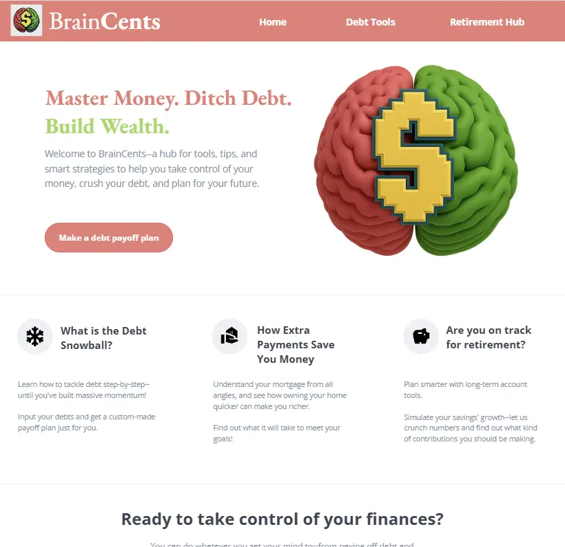
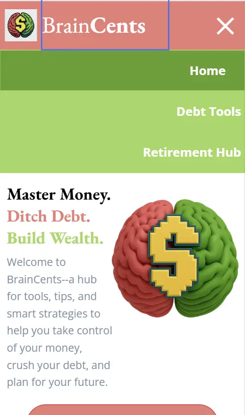

Website Plan - WDD231 - Tyler Peterson
Site Name: BrainCents

I've chosen this as my site name because it describes the subject matter/purpose of the site in a concise
way--brain having to do with the knowledge/information the site aims to communicate, and "cents" conveying
that it is centered around money, or finances.
Site Purpose
The site will be designed to help users become better-informed and equipped to make critical financial
decisions in their lives, like how to save for retirement by selecting an account type and simulating the
likely wealth-building outcome of any given amount of regular contribution over any specified period of
time; or how to get out of debt and generating a schedule for doing so via the snowball method. The site
will use both informative and tool-based means to help the user become comfortable and confident in moving
forward towards freedom from debt and effective retirement saving, etc.
Scenarios
- How quickly could I pay off all of my debt if I currently have $250 per month available for extra
payments? What will the timeline of the process look like, and what's the best approach that will help
me stay motivated?
- If I'm 33 years old and have not started saving for retirement yet, what are the most important things I
should know as I'm getting started? How much should I contribute annually if I want to have $600,000
available in retirement savings by the age of 65?
Color Schema
The color palette to be used for the site is as listed below, and as seen on this site plan document:
- #F17C76, a muted pink/red, to be used for buttons, header background color, tagline
text, etc. as an
accent color.
- #9CD85C, a muted green, to be used for buttons, tagline text, highlights, etc.
as an additional
accent color.
- #FCFCFC, an essentially white color to be used as the background, as well as a text
color
within the
header/navigation menu as needed for contrast to greens/pinks.
- #E8E8E8, a light gray to be used for thin line separators between sections and as an
alternative contrast to black text.
- #798DA3, a dark gray for non-header/less-emphasized text.
- #2A2A2A, a black to be used for the color of text.
- #E04444, a stronger pink to be used for when the user hovers over a muted pink button.
- #58A021, a stronger green to be used for when the user hovers over a muted green button.
Typography
Two fonts will be used on the site--both are seen being generally used for their corresponding purposes on
this site plan
document.
- EB Garamond, used for the logo text, section headings, and the
"tagline" of the site to
communicate wisdom/professionalism.
- Open Sans, used everywhere else for a more modern, readable look in
contrast to the other
font.
Wireframe - Larger Screen
Click on image to view full wireframe

Wireframe - Mobile
Click on image to view full wireframe
